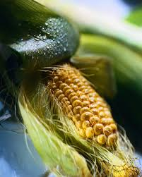

Disease
Maize Lethal Necrosis (MLN)
Definition: A viral disease that causes severe yield loss in maize.
Symptoms: Yellow streaks, drying leaves, stunted growth.
Control: Use certified seeds, crop rotation, remove infected plants.
Pesticides: Imidacloprid, Lambda-cyhalothrin (to control vectors).